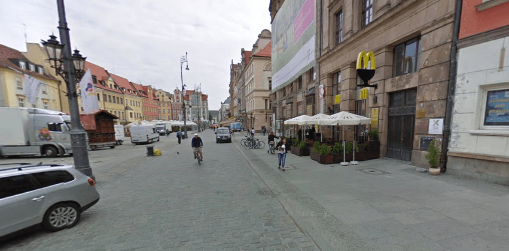

Kyle is an entrepreneur and nomad who has been living abroad since 2016. He blogs at This Is Trouble. Follow him on Facebook.


A few years ago, I took my first trip abroad to Wroclaw, Poland and was pleasantly surprised by the situation. Polish girls were incredibly pleasant, hot, and just happy to see me. It blew my mind. Having lived my entire adult life in Southern California, I had no idea of the potential outside of my home region.
I didn’t make it back to Poland in 2015, but did spend quite a bit of time there in 2016. I spent the majority of my time in Krakow as opposed to Wroclaw, but I did observe a few things regarding Polish culture as a whole. They’ve definitely gone down the rabbit hole as far as worshiping Western culture. At the same time, this isn’t always a bad thing. Having a few parts of the west in a country can make it easier to adapt and easier to get laid—and I’ve tried to point that out and be as objective as possible in my points below.
There’s also a difference given the smaller, industrial feel of Wroclaw versus the college-town vibe of Krakow. With that being said, here are the differences I found between Polish women, culture, and general life in Poland 2014 versus Poland 2016.

I distinctly remember making a mess of a couple of my first interactions in Wroclaw. They didn’t have Whatsapp or Viber, and wanted me to send them a normal SMS. That’s not the case anymore. Every girl above the age of 18 has a smartphone planted firmly by her side. I lost several leads in 2014 because I didn’t bother to get a Polish SIM card.
In 2014, I hardly utilized Tinder because night and day game were that good. My friend and I both fired it up briefly, but didn’t really get any traction on it. We chalked it up to Polish girls not being up-to-date with technology and concentrated our efforts elsewhere. Well, that’s not the case now.
In 2014, when I texted girls trying to set up dates, it was pretty straightforward. It was so simple, I wanted to pack my life up, learn Polish, and move to Wroclaw. In 2016, I was dealing with more, “I’m busy, I have work, I’m tired”, kind of games that plague the dating scene in the west. I had to acquire (and burn) more leads to get those same dates.
Even though we’re in the midst of a hopeful return of traditional values, the smartphones simply are not going away. They’re only going to become more advanced. This is why you’ve simply got to master the technology side of dating .
The bright side: In Krakow, I was averaging 200 matches a week on Tinder. Most of the girls were reasonably attractive, and more than willing to meet me (likely because of my specific look). It’s never been easier to a high quantity of dates, but with it comes the aforementioned mind games.

I’ve noticed this not only in Poland, but other countries such as Ukraine, Czech Republic, etc. It’s not just the McDonald’s. Those have always been present. No, it’s the incredible number of KFCs, Pizza Huts, and Starbucks that are popping up on every Old Town Square in Eastern Europe.
It’s one thing to have one McDonald’s in the center of town, because then it’s almost like a novelty item. People go out to eat it and experience the American culture, as a treat. Now though, with McDonald’s losing their foothold on the market, it’s becoming far more of a daily and normal thing to eat fast food. After all, there are just so many places to try.
The bright side: The one slimmer of hope (and it’s a bit of a long shot, I’ll admit) in this is that it will hopefully drive the overall prices of American fast food chains down in Europe. With the way McDonald’s has priced things in the past, it’s almost a luxury item. A cheaper price signals a cheaper quality. Hopefully, this will wake Eastern European women up as they realize that their now-cheap fast food makes them fat and isn’t a quality meal out.
Nearly every Polish girl that I met in 2016 and had success with was a girl who told me she was all about the career life. However, once I got inside them (literally), their attitudes changed. They wanted to cook for me, they wanted to be feminine. They deferred to me on any and all decisions—and were generally very pleasant to be around.
It was as if their real biology was screaming for them to act like a normal sane woman. I didn’t really have to reach that far to get there. In comparison, it often takes months of banging an American girl out and treating her like borderline dirt to bring out the feminine side of her.
The bright side: It’s a great middle ground between the challenges of Ukrainian women and the western girls. Polish girls, frankly, are about as easy to get into bed as an American girl. Don’t try to turn a hoe into a housewife, but I’d be much more inclined to want a relationship with a Polish girl.
With Trump being re-elected, things are returning to a more masculine state. To me, Poland has always been that gateway to Eastern Europe. A country that is divided. You have girls who have traditional values deep within them, but are being pulled desperately in the direction of careers, feminism, and overall unpleasantness. You just have to be willing to put in the work to bring that out of them.
My hope is that in the coming years, central European countries such as Poland and Hungary will sway more towards how it used to be rather than continuing to go down the path they currently are. As of now, I don’t have any plans to return to Poland in 2017, but you can bet I’ll return in 2018 to re-evaluate which side of the culture war it has fallen on.
If you’re interested in learning more about Poland and other Eastern European countries, check out Eastern European Travel. Learn how to build, manage, and keep a harem with King’s Code. To learn more click here.